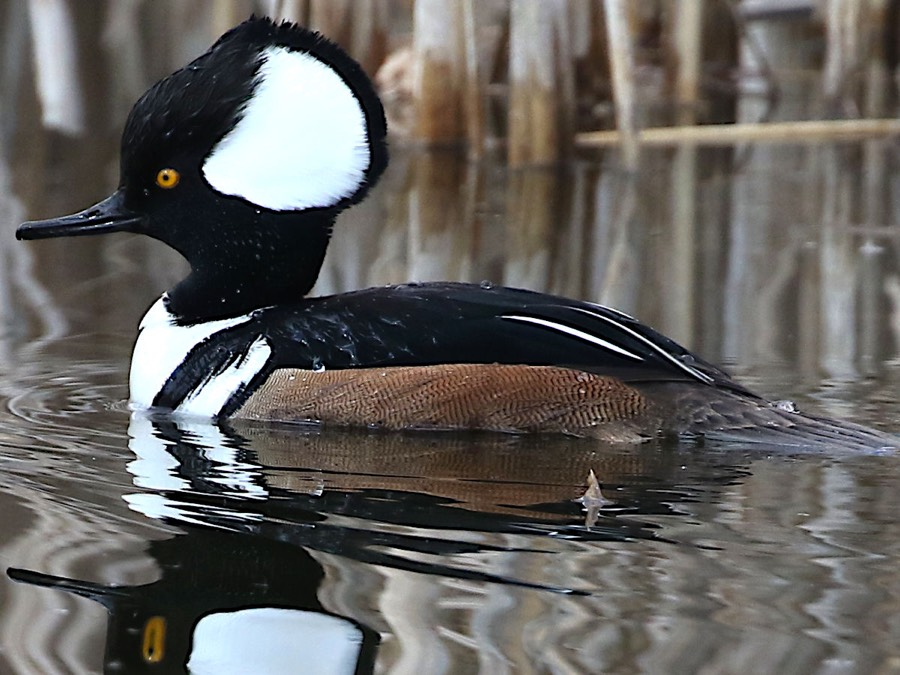

Hooded Merganser
Lophodytes cucullatus
- Kind
- bird
- Native to Vermont
- yes
- Legal status
- State rank S4B, S2N (Vermont Breeding Bird Atlas): a breeding merganser that increased by 188 percent between atlases. (checked 2026-11-01)
Listen
Call, 36 seconds long; this plays the first 25 seconds and needs an internet connection. Recording by Jonathon Jongsma, CC BY-SA 4.0, on Wikimedia Commons (opens the whole recording).
Pictures

Names
Hooded Merganser (Lophodytes cucullatus).
Range and habitat
Breeds across Vermont, with the greatest increase in the Southern Vermont Piedmont (26 to 75 blocks; the species is at the core of its range); the Champlain Valley checklist lists it in spring, summer and fall. Habitat: wooded lakes, ponds and rivers; in summer forested creeks, narrow rivers and pond edges; it uses open marshes if artificial nest sites are provided (Audubon).
How to identify (by season; look-alikes and the key difference)
16 to 19 inches, the smallest of the three native mergansers. The male has a large fan-shaped crest, white with a black border, that he can raise high or keep flat; the female is smaller, more uniformly dark and has a mostly dark bill and a paler bushy crest. Voice: hoarse grunts and chatters (Audubon).
Through the year
Dates are typical for Vermont and shift with elevation and year; "approximate" means the source gave a season and the dates are a translation of it.
| When | What | Look for | What to do | Dates |
|---|---|---|---|---|
| Mar 1 to Mar 31 | migration (watch) | Hooded mergansers generally return in early March, two weeks or more before wood ducks, and may be laying eggs by the end of the month (Atlas). | - | stated |
| May 18 to Jun 10 | nesting (watch) | Vermont atlas workers found 16 nests between 18 May and 10 June; nests are difficult to find and females with broods are secretive (Atlas). | - | stated |
Signs on the land (tracks, scat, browse, nests, holes, calls)
A female's distraction display if you come near a brood: propelling herself across the water with flailing wings (Atlas). Nests are difficult to find and females with broods are secretive.
Role in the forest (what it eats, what eats it, what it needs)
Mainly small fish, crayfish and aquatic insects, plus a few tadpoles and mollusks; ducklings eat mostly insects (Audubon). Nests in tree cavities, preferably over standing water, usually 10 to 50 feet up; 10 to 12 eggs, incubated about a month by the female alone, and the male leaves once incubation starts (Atlas, Audubon). The young jump from the cavity within 24 hours of hatching and fledge about 70 days later. Females sometimes lay in other females' nests, including wood duck nests (Audubon). Mostly a short-distance migrant; migration is relatively late in fall and early in spring (Audubon).
What helps it thrive (light, soil, shelter, food and the trees it uses)
Tree cavities over standing water and clear water. The Atlas says beaver ponds with flooded timber are ideal and that the species benefited from forest maturation and from nest sites near water. It also says that, although hooded mergansers often accept nest boxes (particularly over water), there appears little reason to implement such intensive management from a conservation standpoint because mature, cavity-producing trees are readily available and beavers are spreading, so nesting habitat does not appear to be limiting, though boxes may be useful as educational tools; Audubon, by contrast, credits boxes built for wood ducks with helping the recovery of the species. The Atlas says acid rain reduces prey in unbuffered waters and recommends maintaining high water quality to reduce turbidity and support the integrity of food chains.
Managing for it (habitat practices) and living with it (conflicts and damage)
Keep beaver ponds, flooded timber and large cavity trees; protect water quality. Ducks, geese and mergansers have hunting seasons set each year by Vermont Fish & Wildlife in three zones (Lake Champlain, Interior Vermont and Connecticut River). The 2024-25 dates and bag limits are in the Department's 2024 Waterfowl Program Legislative Report (read as text 2026-11-01); they change each year, so check the current Vermont hunting regulations before acting on them. The 2024-25 limit for mergansers was 5 a day. Wildlife Habitat in Harvest Planning covers harvest near wetlands. See Waterfowl and Migration in Vermont for the Vermont season table, where to watch, and what helps waterfowl on your land.
Legal status
Native birds are covered by the federal Migratory Bird Treaty Act, which prohibits taking (killing, capturing, selling, trading and transport are named) protected migratory birds without prior authorization (U.S. Fish and Wildlife Service page, read through a summarizing fetch 2026-10-31). The Act applies to native species named in the treaties (50 CFR 10.13); that list was not checked for this species.
Sources
- Vermont Center for Ecostudies, Vermont Breeding Bird Atlas, Hooded Merganser: http://val.vtecostudies.org/projects/vermont-breeding-bird-atlas/hooded-merganser/ (summarizing fetch 2026-11-01)
- Second Vermont Breeding Bird Atlas, Hooded Merganser account (read as text 2026-11-01): https://media.vtecostudies.org/wp-content/uploads/2026/08/03141947/Hooded_Merganser_vbba2.pdf
- Audubon, Hooded Merganser: https://www.audubon.org/field-guide/bird/hooded-merganser (summarizing fetch 2026-11-01)
What this page is based on
Kind of source: primary-agency and atlas (Vermont Fish & Wildlife, Vermont Breeding Bird Atlas, Audubon)
What was read: Vermont Breeding Bird Atlas Hooded Merganser page (summarizing fetch) and its second-atlas account (read as text, 2026-11-01); Audubon Guide to North American Birds (summarizing fetch). The nest-box counts from a Fish & Wildlife presentation (9.4 percent of box uses) are from a search summary, not read. The photograph is from Illinois.
Last checked: 2026-11-01
Vermont Woodland Owner's Reference, built 2026-11-09. Rules and dates here are summaries, not legal advice; dates shift with elevation and year. Photo and recording credits · Note: _reference/US-VT/Species/Hooded Merganser.md